Biblioteca
De qué se trata la biblioteca
del CaFe.pm ?
Una de nuestras facetas de difundir información sobre el lenguaje y
la cultura Perl, incluye también el poder ofrecer documentación e información
sobre este, y una de esas formas es a través de libros.
Estos proceden de donaciones hechas a CaFe.pm (editorioles, miembros
del grupo, etc.) y están disponibles para que cualqiuer miembro de CaFe.pm
pueda consultarlas.
Cómo pido un libro ?
Simplemente enviando el pedido a la lista de correo ( http://mail.pm.org/mailman/listinfo/cafe-pm ) y en la próxima meeting del grupo vas a poder retirarlo y tenerlo
durante un mes.
Qué libros hay disponibles ?
Aquí se encuentra la lista de libros, pero los que están marcados en
amarillo se encuentran prestados (deberían estar libres para la próxima
meeting).
|
Programming Web Services with Perl
Autores: Randy J. Ray, Pavel
Kulchenko
Editorial: O'Reilly
ISBN: 0-596-00206-8
|
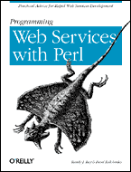
|
|
Linux Cookbook
Autores: Carla Schroder
Editorial: O'Reilly
ISBN: 0-596-00640-3
|
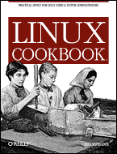
|
|
Secure Coding: Principles and Practices
Autores: Mark G. Graff,
Kenneth R. van Wyk
Editorial: O'Reilly
ISBN: 0-596-00242-4
|
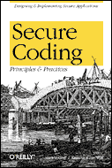
|
|
Virtual Private Networks, Second Edition
Autores: Charlie Scott,
Paul Wolfe, Mike Erwin
Editorial: O'Reilly
ISBN: 1-56592-529-7
|
|
|
Perl and XML
Autores: Erik T. Ray, Jason McIntosh
Editorial:
O'Reilly
ISBN: 0-596-00205-X
|
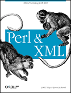
|
|
Learning Perl, Fourth Edition
Autores: Randal L. Schwartz,
Tom Phoenix, brian d foy
Editorial: O'Reilly
ISBN: 0-596-10105-8
|
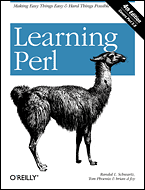
|
|
Perl Best Practices
Autor: Damian Conway
Editorial: O'Reilly
ISBN: 0-596-00173-8
|
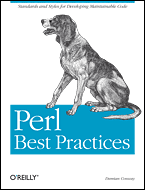
|
|
Open Sources 2.0
Autores: Chris DiBona, Mark Stone, Danese
Cooper
Editorial: O'Reilly
ISBN: 0-596-00802-3
|
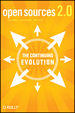
|
|
Perl Testing: A Developer's Notebook
Autores: Ian Langworth,
chromatic
Editorial: O'Reilly
ISBN: 0-596-10092-2
|
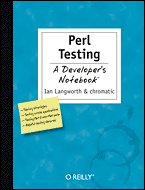
|
|
Perl 6 and Parrot Essentials
Autores: Allison Randal, Dan Sugalski,
Leopold Tötsch
Editorial: O'Reilly
ISBN: 0-596-00737-X
|
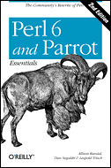
|
|
Apache Security
Autor: Ivan Ristic
Editorial: O'Reilly (Primera Edición Marzo del 2005)
ISBN: 0-596-00724-8
|

|
|
Practical mod_perl
Autor: Stas Bekman, Eric Cholet
Editorial: O'Reilly
ISBN: 0-596-00227-0
|
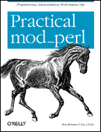
|
|
Perl for System Administration
Autor: David N. Blank-Edelman
Editorial: O'Reilly
ISBN: 1-56592-609-9
|
|
|
Google Hacks
Autor: Tara Calishain & Rael Dornfest
Editorial: O'Reilly
ISBN: 0-596-00857-0
|
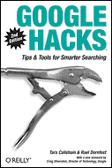
|
|
Learning Perl Objects, References and Modules
Autor: Randal
-
Schwartz with Tom Phoenix
Editorial: O'Reilly
ISBN: 0-596-00478-8
|
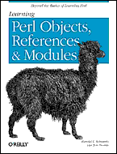
|
|
Mastering Algorithms with Perl
Autor: Jon Orwant, Jarkko Hietaniemi,
John Macdonald
Editorial: O'Reilly
ISBN: 1-56592-398-7
|
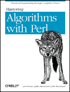
|
|